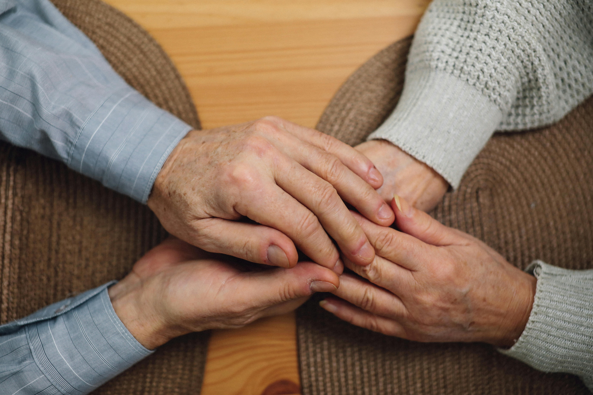

Ce site internet est né d'un constat simple : face à un proche atteint de la maladie d'Alzheimer, les familles et les aidants se retrouvent souvent seuls et démunis. Face à un proche qui cherche ses mots, qui se tait ou qui abandonne sa phrase, il n'est pas toujours évident de trouver les stratégies concrètes pour maintenir une communication apaisée et efficace.
Ce projet a été imaginé et réalisé dans le cadre d'un projet de fin d'études en logopédie. En tant que futures logopèdes, nous avons souhaité mettre nos connaissances au service de celles et ceux qui accompagnent au quotidien : vous proposer un outil concret, accessible et bienveillant.
Au cœur de ce site : un arbre décisionnel qui vous guide pas à pas vers les stratégies les plus adaptées à la situation que vous êtes en train de vivre. Cette démarche s'inscrit dans ce que la recherche appelle la guidance des aidants (caregiver training), une approche dont l'efficacité a été démontrée scientifiquement (Rousseau, 2021).

Que vous soyez conjoint(e), enfant, petit-enfant, ami(e) proche ou aidant informel, vous êtes en première ligne. Vous vivez au quotidien ces moments où la communication accroche, où le mot ne sort pas, où vous ne savez pas quoi dire ni quoi faire.
Chaque personne atteinte de la maladie d'Alzheimer est unique. La maladie évolue à un rythme propre à chacun, et ce qui fonctionne pour un proche peut ne pas convenir à un autre. C'est pourquoi cet outil n'impose pas une seule bonne réponse, mais vous accompagne dans la recherche de ce qui convient le mieux à votre situation, à votre proche, à ce moment précis.